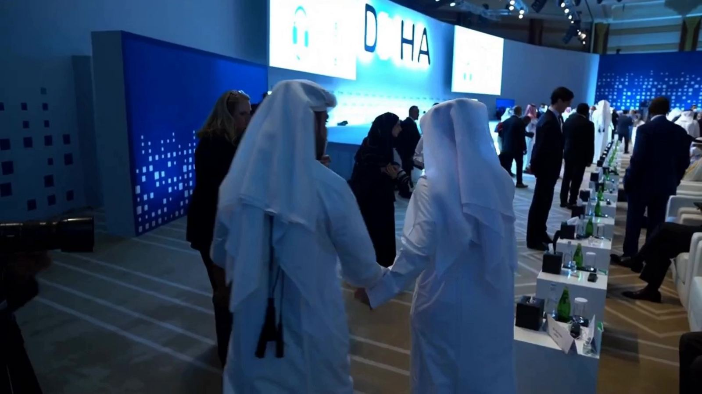

Conferences · Tech
Doha Forum 2026
- Dates
- –
- Venue
- Sheraton Grand Doha Resort & Convention Hotel
- Location
- Doha, Qatar
- Format
- In-person
- Category
- Tech
- Industry
- Policy / Diplomacy
- Organiser
- Doha Forum
- Expected attendance
- 6,500
- Official website
- https://dohaforum.org/
About
24th edition, theme 'Redefining Global Trust'. Attendance by application. Qatar dates are local (Arabia Standard Time, UTC+3).
Topics: geopolitics, diplomacy, economy, technology governance.
Official homepage 'Doha Forum 2025 at a glance: 6,500 Participants, 470 Speakers, 170 Countries' (previous edition; no 2026 figure).
Sources
- Official — https://dohaforum.org/
- Official-tourism-calendar — https://visitqatar.com/intl-en/events-calendar